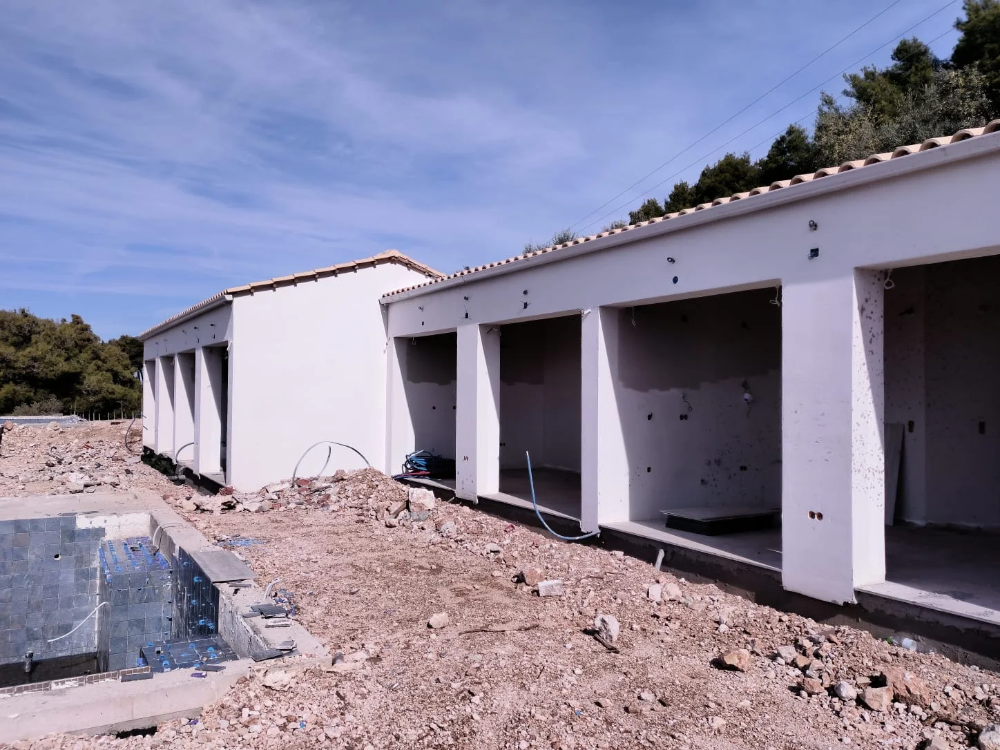
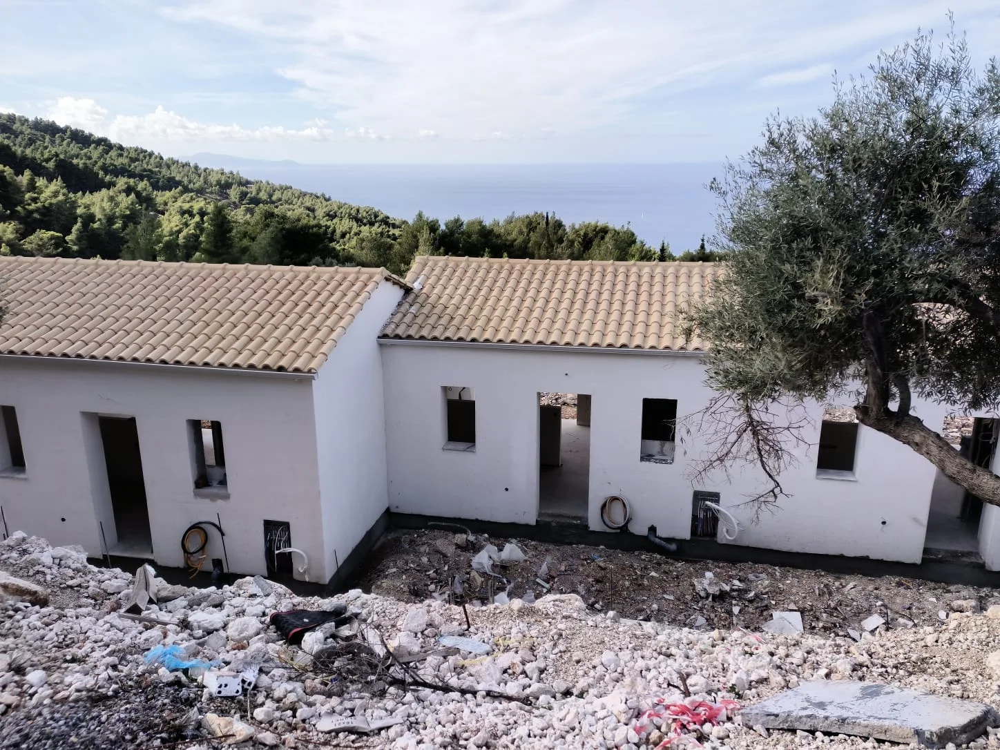

Skip to content
MI ARCHITECTS
Architecture · Construction
Home
Development
Construction
Services
Portfolio
Our Story
Contact
← All construction
Athani · Construction
Athani Residences
08 images / Construction journal
View full image ↗
01
Terraces under construction
View full image ↗
02
Interior finishing
View full image ↗
03
Working beneath the timber roof
View full image ↗
04
The emerging building
View full image ↗
05
The coastal setting

View full image ↗
06
Façade and groundworks

View full image ↗
07
White volumes among olive trees
View full image ↗
08
Preparing the building envelope
Next project
Kalamitsi
↗
✕
←
→